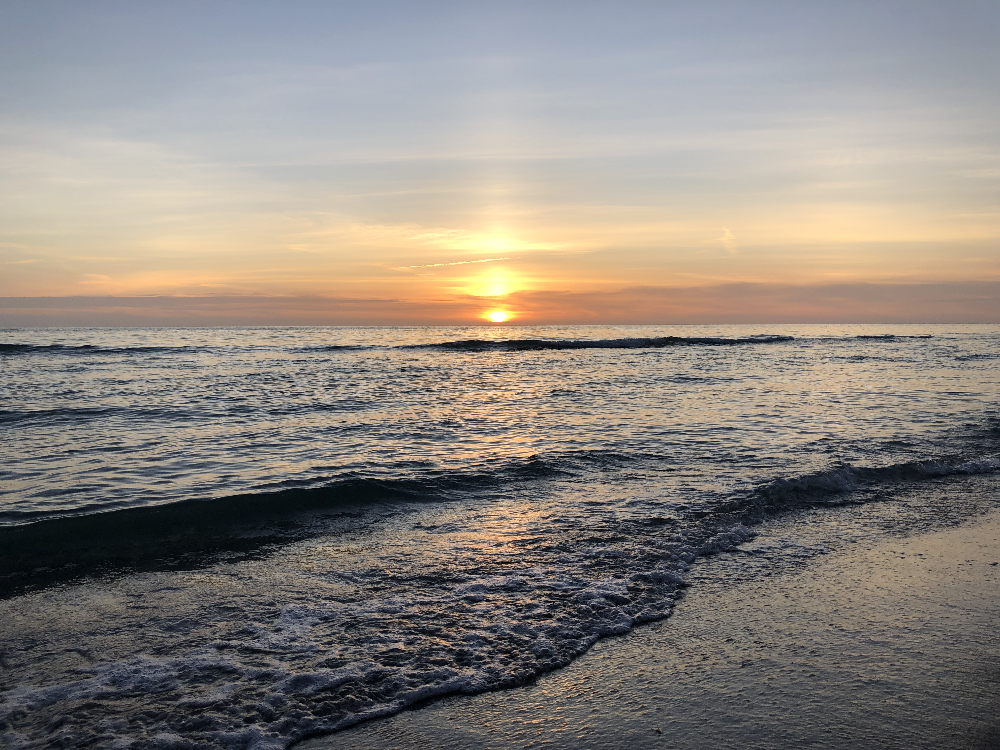

Page 2
Page 2
Captiva Island
A place I really love

Captiva Island is a beautiful island located on the west gulf coast of Florida about 40 minutes away from Fort
Myers.
It was a family vacation which took place last year in 2020 where we spent a week enjoying the beach, boating,
ocean fishing,
and is a great place for sea shell hunting. We were celebrating my grandma's 75th and grandpa's 70th Birthdays as
well as
seeing what it was like for our parents who also explored the area 35 years ago. One of my favorite parts of the
island
were the sunsets on the beach and this is my favorite photo of one of those sunsets.
Table Of Contents
Back
Next